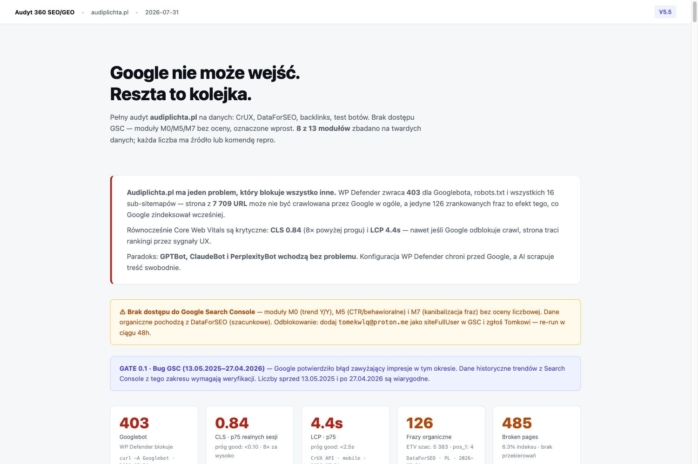

Audi Grupa Plichta · 08 · założenia strategiczne GEO / SEO
Widoczność lokalna i AI (SEO + GEO) — plan na 3 miesiące
Asystentów AI nie da się kupić. W tym kanale nie ma wersji płatnej — obecność zdobywa się treścią i reputacją. Dlatego to nie jest plan „pozycjonowania", tylko plan budowy treści, która odpowiada na pytania kupującego auto — i dzięki temu jest cytowana, a przy okazji konwertuje na stronie.
⚠ Warstwa techniczna osobno → Strategia SEO
6 map kategorii gotowych przed ofertą
6 000 PLN / mc · budżet osobny od mediowego
Widoczność w wyszukiwarce i w odpowiedziach AI ma dwie warstwy. Jedna bez drugiej nie działa.
Punkt wyjścia — audyt SEO / GEO
Zrobiony 31 lipca 2026, przed złożeniem tej oferty. To z niego wynika kolejność prac w pierwszych trzech miesiącach.

Otwórz pełny audyt — 13 modułów, każda liczba ze źródłem ↗
Jeden problem blokuje wszystko inne. Zabezpieczenie serwera zwraca robotom Google odmowę dostępu — strona z 7 709 adresami może nie być w ogóle przeszukiwana. Paradoks: roboty asystentów AI wchodzą bez przeszkód, więc dziś łatwiej trafić do odpowiedzi ChatGPT niż na pierwszą stronę Google.
Trzy miesiące poprawy — co i kiedy
Sierpień 2026
Odblokowanie i plan
- Odblokowanie serwisu dla robotów Google i asystentów AI 2 tygodnie
- Plan optymalizacji SEO / GEO — część techniczna 1 miesiąc
Najpierw wpuszczamy Google na stronę. Bez tego każda inna praca liczy się od zera.
Wrzesień 2026
Przebudowa techniczna
- Indeksacja, struktura adresów, dane strukturalne 2 miesiące
- Strategia treści w oparciu o mapy percepcji 1 miesiąc
- Optymalizacja wizytówek Google Maps 1 miesiąc
Naprawiamy to, co audyt wykrył: szybkość, stabilność układu, adresy zwracające błąd, brakujące dane strukturalne.
Październik 2026
Start realizacji
- Przebudowa techniczna — dokończenie
- Start działań GEO / SEO — pierwszy miesiąc planu 1 miesiąc
Strona jest już dostępna i poprawna, więc treść ma na czym stanąć. Od tego miesiąca ruszają publikacje.
Dlaczego to jest plan treści, a nie plan pozycjonowania
Trzy ustalenia przesądzają o kształcie tego programu. Żadne nie jest naszą opinią — dwa pochodzą z badań, jedno z Waszych danych.
Bliskość nie decyduje w AI
W wynikach lokalnych Google odległość waży. W odpowiedziach asystentów — praktycznie nie. Salon z Gdyni może wygrać zapytanie zadane w Toruniu, jeśli ma treść odpowiadającą na pytanie i reputację, która ją uwiarygadnia. To odwraca intuicję o „lokalności" i tłumaczy, dlaczego różnica 720 kontra 29 opinii między Waszymi salonami jest różnicą między widocznością a nieistnieniem.
Tematów nie wymyślamy
Mapy pytań kupującego auto są już zbudowane — sześć kategorii, ponad 800 pytań, każde z priorytetem i statusem „jest / brakuje / do rozbudowy". Powstały przed złożeniem tej oferty. Program treści nie zaczyna się od burzy mózgów, tylko od gotowego backlogu, w którym wiadomo, co pisać najpierw.
Trzecie ustalenie — z Waszego własnego podwórka. Badanie ścieżki konsumenta przeprowadzone w grupie Volkswagen wymienia konkretne bariery, na jakie trafia kupujący. Prawie każda z nich to brakująca treść na stronie dealera: brak porównywarki modeli, brak jasnej informacji co wchodzi w wyposażenie podstawowe, zbyt techniczne nazewnictwo, ograniczone doświadczenie auta online, trudności przy finansowaniu. Nie musimy zgadywać, czego brakuje — jest to spisane w Waszej grupie.
Mapy percepcji — plan na budowę
Mapa percepcji to lista pytań, jakie zadaje sobie kupujący, zanim w ogóle trafi na Waszą stronę — pogrupowana w sytuacje wejścia, z priorytetem i statusem. Z niej bierze się każdy temat do napisania. Poniżej plan: co budujemy, w jakiej kolejności i po co.
| Kategoria | Po co w Waszym przypadku | Stan | Kiedy |
|---|
Samochody osobowe — prywatny
152 pytania · 8 ścieżek | Rdzeń oferty nowych aut. Z niej wychodzą przewodniki wyboru, porównania i słownik. | gotowa | od startu |
| Leasing i finansowanie | Finansowanie jest w badaniu VW wymienione jako jeden z najtrudniejszych etapów. Tu mieszka kalkulator i Audi Perfect Lease. | gotowa | od startu |
| Samochody osobowe — biznesowy | Inna ścieżka decyzji, inne pytania: koszty, odpisy, flota. Inny odbiorca niż prywatny. | gotowa | od startu |
| Samochody elektryczne | Zasięg, ładowanie, koszt eksploatacji — obiekcje, których badanie z 2020 nie obejmuje. | gotowa | od startu |
| Używane z gwarancją | Osobna domena i osobna ścieżka. Dziś poza pomiarem — i poza treścią. | gotowa | od startu |
| SUV premium | Najmocniejszy segment Audi. Q3, Q5, Q7 — modele o największym ruchu na Waszych landing page'ach. | gotowa | od startu |
Serwis i części
do zbudowania | Kluczowa dla głównego bólu z briefu. Żeby rozdzielić ruch serwisowy od sprzedażowego, trzeba wiedzieć, o co pyta klient serwisowy — a to zupełnie inne pytania i inna intencja. Bez tej mapy rozdzielamy ruch po omacku. | budujemy | miesiąc 1 |
Marki chińskie w grupie
do zbudowania | BYD, MG, Omoda, Jaecoo — inny zestaw obiekcji niż przy marce niemieckiej. Dziś obsługiwane jako odgałęzienie mapy elektryków; zasługują na własną. | budujemy | miesiąc 2 |
Dlaczego mapa serwisowa jest w tym planie, choć dotyczy punktu 2 briefu. Bo to ta sama robota. Rozdzielenie ruchu serwisowego od sprzedażowego zaczyna się od zrozumienia, czego szuka klient serwisowy — a wynik tej pracy zasila jednocześnie kampanie (osobne tory) i treść (sekcja serwisowa, która dziś nie ma nawet zdarzenia wejścia). Jedna mapa, dwa zastosowania.
Co konkretnie piszemy — bariera po barierze
Każdy wiersz to typ treści przypisany do etapu ścieżki i do realnej bariery z badania. Ostatnia kolumna mówi, dlaczego ta sama treść działa również w asystentach AI — bo odpowiada na pytanie w formie, którą da się zacytować.
| Etap | Bariera kupującego | Treść, która ją usuwa | Dlaczego cytowalna |
|---|
| Rozpoznanie | Przeładowanie informacjami, zbieranie z wielu źródeł naraz | Przewodniki wyboru: który model do czego — rodzina, firma, miasto, trasa. Wprost z pytań z mapy kategorii. | Pytanie w nagłówku, odpowiedź w pierwszym akapicie |
| Sprawdzanie | Brak porównywarki modeli — kupujący porównują na dwóch monitorach przez portale ogłoszeniowe | Porównania modelowe: Q3 kontra Q5, A4 kontra A6 — wymiary, bagażnik, koszty, dla kogo który. | Tabela z konkretnymi wartościami |
| Sprawdzanie | Nie wiadomo, co wchodzi w wyposażenie podstawowe, dopłata za każdy element | Rozpisane wersje wyposażenia bez kruczków: co w bazie, co w pakiecie, ile kosztuje dołożenie. | Lista faktów, zero marketingu |
| Sprawdzanie | Nazewnictwo zbyt techniczne — potrzebny słownik, żeby zrozumieć ofertę | Słownik po ludzku: quattro, mHEV, S line, pakiety — co to znaczy i czy tego potrzebujesz. | Definicja to idealny format do cytowania |
| Sprawdzanie | Szukają awaryjności, spalania i kosztów utrzymania — na forach i w niezależnych testach, bo tam ufają | Realne koszty utrzymania per model: przeglądy, ubezpieczenie, spalanie z eksploatacji, co się zużywa. | Liczby, których nie ma u producenta |
| Sprawdzanie | Nie da się doświadczyć auta online — brakuje wnętrza, wymiarów, materiałów | Treść wideo z opisem: bagażnik z wymiarami, wnętrze, materiały, zbliżenia. Opis tekstowy przy każdym materiale. | Opis i transkrypcja są czytane, wideo nie |
| Wybór | Finansowanie to trudny etap — dokumenty, kilka miejsc do sprawdzenia | Finansowanie krok po kroku: leasing kontra kredyt kontra wynajem, jakie dokumenty, ile trwa, dla kogo co. | Procedura rozpisana w krokach |
| Lokalne | Wybór salonu — najbliższy kontra ten z lepszą ofertą na drugim końcu Polski | Strony lokalizacyjne: historia salonu, zespół z sylwetkami, specjalizacje modelowe, lokalne inicjatywy, pytania dla regionu. | Sygnał geolokalizacyjny + treść unikalna |
| Po zakupie | Brak kontaktu po zakupie — a telefon od dealera jest odbierany bardzo dobrze | Treść posprzedażowa i program opinii: prośba o recenzję po wizycie, obsługa odpowiedzi. | Opinie są dosłownie cytowane przez asystentów |
To jest ta sama robota dwa razy. Treść, która usuwa barierę kupującego, jest jednocześnie treścią, którą cytuje asystent — bo obie odpowiadają na to samo pytanie. Dlatego nie dzielimy tego budżetu na „treść" i „GEO": to jedno działanie z dwoma efektami — wyższa konwersja na stronie i obecność w kanale, którego nie da się kupić.
Reverse Recon — skąd wiemy, co napisać, żeby miało szansę
Pisanie treści „bo temat wygląda sensownie" to najdroższy sposób na zajęcie jedenastego miejsca. Zanim powstanie jakakolwiek jednostka, robimy rozpoznanie: co już odpowiada na to pytanie — w Google i w asystentach — i czego tam brakuje. To praca cykliczna, powtarzana co miesiąc na kolejnej partii pytań.
KROK 1
Pytanie ze ścieżki
Wchodzimy konkretnym pytaniem z mapy kategorii, nie wymyśloną frazą. Pierwszeństwo mają pytania oznaczone jako blokery decyzji.
wsad: 805 pytań · 8 ścieżek wejścia
KROK 2
Kto tam już jest
Czołówka wyników plus elementy strony: pytania powiązane, sekcja lokalna, wyróżnione odpowiedzi. Osobno — co odpowiada asystent AI i kogo w tej odpowiedzi cytuje.
dwie czołówki: wyszukiwarka i asystent
KROK 3
Co mają w treści
Pobranie stron z czołówki i sprowadzenie ich do czystego tekstu, bez nawigacji i banerów. Zestawienie: jakie sekcje mają wszyscy, jak długie, jak zbudowane.
czysty tekst zamiast kodu strony
KROK 4 · WYNIK
Luka, nie kopia
Najważniejszy krok. Szukamy tego, czego nikt nie odpowiada albo odpowiada jeden na dziesięciu. Kopia czołówki nie daje nikomu powodu, żeby pokazać nas zamiast nich.
wynik: brief na jedną jednostkę treści
Przewaga, która wynika z Waszej sytuacji. Zwykły recon patrzy tylko na wyniki wyszukiwania. My sprawdzamy obie strony naraz — bo to bywają dwie różne czołówki. Jeśli na pytanie „który dealer Audi w Trójmieście ma Q5 od ręki" asystent cytuje portal ogłoszeniowy albo forum, a nie żadnego dealera — to jest wolne miejsce. Takich miejsc szukamy systematycznie, a nie przy okazji.
Druga ścieżka: co już sprawdziła konkurencja. Równolegle bierzemy frazy, na które rankują inni dealerzy premium w regionie, i przepuszczamy je przez filtr: precz z brandowymi, precz ze zbyt ogólnymi, zostają te ze średniego ogona i realną szansą. Sens jest prosty — nie trzeba zgadywać, co działa, skoro ktoś już to sprawdził swoim budżetem. Wynik to nie sama lista fraz, tylko przypisanie: która fraza na którą stronę i w jakiej kolejności.
Dlaczego to jest praca miesięczna, a nie jednorazowy audyt. Czołówka się zmienia, asystenci zmieniają źródła, konkurencja dopisuje treści. Powtarzany recon daje dwie rzeczy naraz: listę tematów na następny miesiąc oraz sprawdzenie, czy to, co napisaliśmy miesiąc temu, faktycznie weszło — czyli zamyka pętlę między produkcją a wynikiem. Wiedza, jakie frazy rankuje konkurent, jest bezwartościowa bez decyzji, w jakiej kolejności i na jaką stronę je wdrożyć. Ta decyzja to właśnie ta pozycja w budżecie.
Plan na 3 miesiące
- Audyt widoczności — gdzie jesteście dziś w odpowiedziach asystentów i w wynikach lokalnych. Punkt startu, do którego wrócimy w miesiącu trzecim
- Mapa kategorii „serwis i części" — budowa od zera; zasila jednocześnie rozdzielenie ruchu w kampaniach
- Priorytetyzacja pytań z sześciu gotowych map pod Wasze modele i salony
- Pięć wizytówek uporządkowanych: kategorie, zdjęcia, godziny, opis, spójność danych firmowych
- Cztery jednostki treści — start od barier o największym zasięgu: słownik i wyposażenie
- Pierwsza strona lokalizacyjna — salon z najsłabszą widocznością
na koniec: punkt odniesienia, mapa serwisowa, pierwsze treści
- Osiem jednostek treści: porównania modelowe i koszty utrzymania — najczęściej szukane, najrzadziej dostępne
- Mapa kategorii „marki chińskie" — BYD, MG, Omoda, Jaecoo jako osobna ścieżka zakupowa
- Druga i trzecia strona lokalizacyjna, z sylwetkami zespołu
- Program opinii uruchomiony: wiadomość po wizycie z linkiem do recenzji, obsługa odpowiedzi
- Opisy do materiałów wideo — żeby były czytane, nie tylko oglądane
- Pierwszy pomiar cytowań: co i gdzie zaczyna się pojawiać
na koniec: 12 jednostek treści, 3 strony lokalizacyjne, 8 map
Miesiąc 3
Skalowanie i dowód
- Osiem jednostek treści: finansowanie i przewodniki wyboru — etap najbliższy decyzji
- Pozostałe strony lokalizacyjne — komplet pięciu salonów
- Rozbudowa map o ścieżki, które w danych okazały się najmocniejsze
- Raport widoczności: gdzie jesteście cytowani, jak zmienił się ruch z asystentów, jak urosły opinie — zestawione z punktem startu
- Rekomendacja: co skalować, co wygasić, czy kontynuować
na koniec: 20 jednostek, 5 stron, raport z porównaniem
Dlaczego akurat trzy miesiące. Obecność w odpowiedziach asystentów nie pojawia się w tydzień — treść musi zostać zindeksowana, przeczytana i uznana za wiarygodną. Kwartał to najkrótszy okres, po którym widać kierunek i można zdecydować na liczbach. Krótszy test pokaże szum, nie efekt.
Na co idzie budżet — 6 000 zł w pierwszym miesiącu, potem 4 000
Pierwszy miesiąc jest droższy, bo powstają w nim mapy percepcji i plan treści na cały kwartał —
fundament, z którego bierze się każdy kolejny temat. Od drugiego miesiąca budżet spada do 4 000 i utrzymuje się na tym poziomie.
PozycjaMiesiąc 1Miesiąc 2Miesiąc 3+
Produkcja treści32 jednostki w kwartale — ok. 10–12 miesięcznie2 4002 4002 400
Podstrony lokalizacyjne1–2 salony miesięcznie, z wideo i zespołem1 200600600
Mapy percepcji i plan treści na kwartałtylko w pierwszym miesiącu — fundament1 400——
Wizytówki i program opinii5 lokalizacji500500500
Audyt widoczności po frazach + reverse engineeringco miesiąc, przed produkcją kolejnej partii500500500
Razem miesięcznie6 0004 0004 000
Kwoty netto, budżet osobny od mediowego. Audyt widoczności po frazach kluczowych i reverse engineering czołówki
jest w każdym miesiącu — bez niego produkcja treści byłaby strzelaniem. To on decyduje, co powstaje w kolejnej partii.